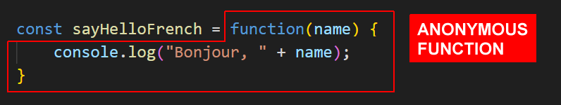
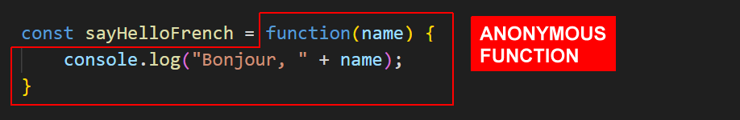
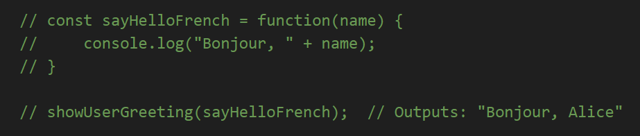

Learning Goals
At the end of this Tutorial, you will be able to:
- Understanding what a callback function is in JavaScript.
- Pass functions as callbacks to a 'main' function, using the named, anonymous and arrow function syntax for the passed functions.
Download a new workfile on your computer as described at the link below.
Functions, parameters, and arguments
In the Function declarations Tutorial, you learnt that you can pass one or more values to a function for that function to work with.
In the example above:
- A function is created with a parameter named num. There is no need to declare num as a variable separately. It is created as part of the function that contains it.
- When the function is called, an argument of 21 is passed to the function. This argument value can be different every time you call the function.
Parameters are what you specify when you create the function. Arguments are what you pass to the function when you call the function.
About callback functions
A callback function is a function that is passed as an argument to another function.
Copy the two functions below into your callback-functions.html file and verify they run correctly.
// ======== BASIC MAIN AND CALLBACK FUNCTION ========
// The main function with a parameter named 'callback'
function mainFunction(callback) {
// Do something
callback(); // run the callback function passed as an argument
};
// The function that will be passed as an argument to the 'callback' parameter
function callbackFunction() {
console.log("Hello from callback function.");
}
// Run the main function
mainFunction(callbackFunction)Parameters and callback functions
The 'main' function can accept different callback functions to produce different results. And the 'main' function can pass parameters to the callback function. See the example below:
// ======== MAIN FUNCTION WITH TWO CALLBACK FUNCTIONS ========
function showUserGreeting(callback) {
let userName = "Alice";
callback(userName);
}
function sayHello(name) {
console.log("Hello, " + name);
}
function sayGoodbye(name) {
console.log("Goodbye, " + name);
}
// We can pass different callbacks
showUserGreeting(sayHello); // Outputs: "Hello, Alice"
showUserGreeting(sayGoodbye); // Outputs: "Goodbye, Alice"You can apply this logic of passing different callbacks to the same main function to build a simple calculator. See below:
// Main calculate function
function calculate(num1, num2, callback) {
return callback(num1, num2);
}
// Named functions for each operation
function add(a, b) {
return a + b;
}
function subtract(a, b) {
return a - b;
}
function multiply(a, b) {
return a * b;
}
function divide(a, b) {
return a / b;
}
// Using the calculator with named functions
console.log(calculate(5, 3, add)); // Returns 8
console.log(calculate(5, 3, subtract)); // Returns 2
console.log(calculate(5, 3, multiply)); // Returns 15
console.log(calculate(5, 3, divide)); // Returns 1.6666...Note:
- Each arithmetic operation uses a different callback function.
- You pass the required operation function to the calculate() function with the callback parameter.
- The two data parameters num1 and num2 can be accessed by the callback function inside the main calculate() function.
Passing anonymous functions as callbacks
In the Anonymous functions Tutorial, you learnt you can store (the output of) an anonymous function in a variable, and then use that variable name to call the function. See an example below.
As with a function declaration, you can pass an anonymous function as a callback to a 'main' function.' Copy the following code to your workfile and verify it runs correctly.
// Anonymous function stored in variable sayHelloFrench
const sayHelloFrench = function(name) {
console.log("Bonjour, " + name);
}
// Call the main function with the anonymous function
showUserGreeting(sayHelloFrench); // Outputs: "Bonjour, Alice"Note the two steps above:
- You create and give a name (of sayHelloFrench) to the anonymous function.
- You then pass the named anonymous function as a callback to the 'main' showUserGreeting() function.
As a shortcut, you can eliminate the first of these two steps. You don't need to create the named anonymous function. You can directly pass the code of the anonymous function as a callback.
In your workfile, comment out the named anonymous function and the calling of the 'main' function.
Rewrite the function call to the 'main' function so that it contains the code of the anonymous function and its parameter.
// Passing anonymous callback function code with a parameter to main function
showUserGreeting(function(name) {
console.log("Bonjour, " + name)
});
// Outputs: "Bonjour, Alice"Passing arrow functions as callbacks
As with an anonymous function, you can pass the code of an arrow function directly as a callback, without creating a separate variable to store that arrow function. See the example below.
// Passing arrow callback function code with parameter to main function
showUserGreeting( (name) => {
console.log("Buongiorno, " + name)
});
// Outputs: "Buongiorno, Alice"Or even more concisely, you can write.
// Passing arrow callback function code with parameter to main function
// Arrow function has just one parameter and only single statement
showUserGreeting( name => console.log("Guten Tag, " + name) );
// Outputs: "Guten Tag, Alice"Callback functions and array methods
In JavaScript, many array methods in JavaScript use callbacks. Begin by creating an array of objects named arrUsers:
// Creating an array with objects on a single line
const arrUsers = [
{ firstName: "Maria", age: 25, city: "New York" },
{ firstName: "Bob", age: 30, city: "Los Angeles" },
{ firstName: "Charlie", age: 35, city: "Chicago" }
];
console.log(arrUsers);Next, loop through arrUsers and output formatted data to the console using three callback function with different syntax styles - named, anonymous, and arrow/
// 1. Named callback function
function displayUser(user) {
console.log(`Name: ${user.firstName}, Age: ${user.age}, City: ${user.city}`);
}
arrUsers.forEach(displayUser);
// 2. Anonymous callback function
arrUsers.forEach(function(user) {
console.log(`Name: ${user.firstName}, Age: ${user.age}, City: ${user.city}`);
});
// 3. Arrow function callback
arrUsers.forEach(user => {
console.log(`Name: ${user.firstName}, Age: ${user.age}, City: ${user.city}`);
});When you run this code, each version should produce similar output.
Try it yourself
In your workfile...
---
Create a main function called processText that accepts a string and a callback function. Then create two different callback functions that:
- Convert the text to uppercase
- Add exclamation marks to the end of the text
---
Given this array of numbers: [1, 2, 3, 4, 5].
Create a main function called transformArray that accepts the array and a callback. Create three callbacks that:
- Double each number
- Square each number
- Add 10 to each number
---
More learning resources
Tutorial Quiz
Tutorial Podcast
Sample AI prompts
What is the difference between a regular function and a callback function in JavaScript? Can you show me a basic example of a callback function and explain each part?Show me three different ways to write the same callback function using named, anonymous, and arrow function syntax. What are the advantages and disadvantages of each callback function syntax style?
Please provide examples of when to use each type of callback syntax.